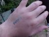
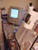
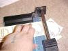

caption >> caption 2001 >> Damian's photos >> Badges
Caption, Oxford's annual small-press comics convention, was held in the Oxford Union Society, Oxford, England on the 18th and 19th of August 2001.
 Making the badges for attendees is the one duty I retain (apart from this web site). In the olden days this was an exceedingly clever program that generated hand-crafted PostScript page descriptions from a text file containing the list of members. Every year I exhume my old Tcl scripts and adapt the design so as to different graphics and layout.  In a break with tradition, this year I did it the easy way—with a DTP program on my ancient Apple Macintosh Perform 5260.
 As the sheets of card emerged slowly from the printer I sliced them up on a hand guillotine. This is one of those home essentials for small-press types. I allowed a bit of watsed card on all four sides to take account of the area the printer can't reach, so I had to guillotine off that bit too. The final step is sticking a safety pin to the back of each badge. This year I hit on the idea speeding up the process by buying a packet of little self-adhesive labels rather than a reel of sticky tape. Useful tip!
Last modified 2004-06-16 |
<webmaster>


{kind=link}
{kind=link}
{kind=link}
{kind=link}